토목기사 (2015-03-08 기출문제)
1과목: 응용역학
1. 『재료가 탄성적이고 Hooke의 법칙을 따르는 구조물에서 지점침하와 온도 변화가 없을 때, 한 역계 Pn 에 의해 변형되는 동안에 다른 역계 Pm이 하는 외적인 가상일은 Pm역계에 의해 변형하는 동안에 Pn 역계가 하는 외적인 가상일과 같다.』이것을 무엇이라 하는가?
- 가상일의 원리
- 카스틸리아노의 정리
- 최소일의 정리
- 베티의 법칙
(정답률: 65%)

2. 그림과 같은 캔틸레버 보에 80kgf의 집중하중이 작용할 때 C점에서의 처짐(δC)은? (단, I=4.5 cm4, E=2.1×106kgf/cm2)
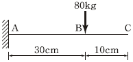
- 1.25cm
- 1.00cm
- 0.23cm
- 0.11cm
(정답률: 51%)
3. 그림과 같은 3활절 포물선 아치의 수평반력(HA)은?
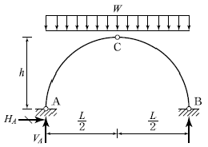
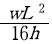
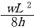
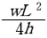
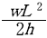
(정답률: 76%)
4. 길이 L인 양단 고정보 중앙에 100kgf의 집중하중이 작용하여 중앙점의 처짐이 1mm 이하가 되려면 L은 최대 얼마 이하이어야 하는가? (단, E=2×106kgf/cm2, I=10 cm4 )
- 0.72m
- 1m
- 1.56m
- 1.72m
(정답률: 55%)
5. 그림과 같이 C점이 내부힌지로 구성된 겔버보에서 B지점에 발생하는 모멘트의 크기는?
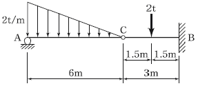
- 9 tfㆍm
- 6 tfㆍm
- 3 tfㆍm
- 1 tfㆍm
(정답률: 73%)
6. 지름 D 인 원형단면 보에 휨모멘트 M이 작용할 때 휨응력은?
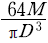
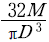
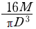
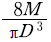
(정답률: 81%)
7. 그림과 같은 3경간 연속보의 B점이 5cm 아래로 침하 하고 C점이 3cm 위로 상승하는 변위를 각각 보였을 때 B점의 휨모멘트 MB를 구한 값은? (단, EI=8×1010kgfㆍcm2 로 일정)
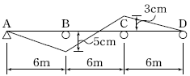
- 3.52×106 kgfㆍcm
- 4.85×106 kgfㆍcm
- 5.07×106 kgfㆍcm
- 5.60×106 kgfㆍcm
(정답률: 47%)
8. 그림과 같은 트러스에서 부재 AB의 부재력은?
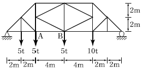
- 10.625 tf(압축)
- 15.⑤ tf(압축)
- 10.625 tf(인장)
- 15.⑤ tf(인장)
(정답률: 57%)
9. 다음과 같이 1변이 a 인 정사각형 단면의 1/4 을 절취한 나머지 부분의 도심(C)의 위치 yo는?
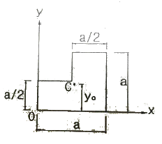
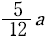
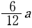
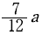
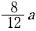
(정답률: 66%)
10. 그림과 같은 내민보에서 A점의 처짐은? (단, I=16,000 cm4, E=2.0×106 kgf/cm2 이다.)
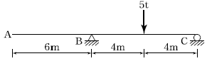
- 2.25cm
- 2.75cm
- 3.25cm
- 3.75cm
(정답률: 50%)
11. 그림(a)와 같은 하중이 그 진행방향을 바꾸지 아니하고, 그림(b)와 같은 단순보 위를 통과할 때, 이 보에 절대최대휨모멘트를 일어나게 하는 하중 9tf의 위치는? (단, B지점으로부터 거리임)
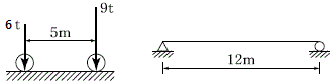
- 2m
- 5m
- 6m
- 7m
(정답률: 66%)
12. 주어진 보에서 지점 A의 휨모멘트(MA) 및 반력 RA의 크기로 옳은 것은?
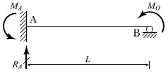
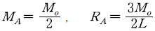
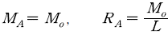
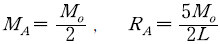
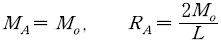
(정답률: 77%)
13. 그림에 표시한 것과 같은 단면의 변화가 있는 AB 부재의 강도(Stiffness Factor)는?
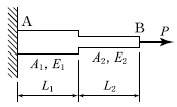
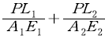
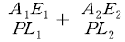
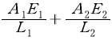
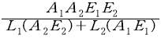
(정답률: 73%)
14. 그림과 같이 길이 L인 부재에서 전체 길이의 변화량 ΔL은? (단, 보는 균일하며 단면적 A와 탄성계수 E는 일정)
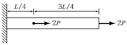
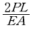
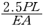
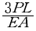
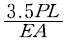
(정답률: 69%)
15. 그림과 같은 단면에 1,500kgf의 전단력이 작용할 때 최대 전단응력의 크기는?
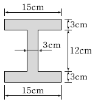
- 28.6 kgf/cm2
- 35.2 kgf/cm2
- 47.4 kgf/cm2
- 59.5 kgf/cm2
(정답률: 70%)
16. 지름이 d 인 강선이 반지름 r 인 원통 위로 굽어져 있다. 이 강선 내의 최대 굽힘모멘트 Mmax 는? (단, 강선의 탄성계수 E=2×106 kgf/cm2 , d=2 cm, r =10 cm)
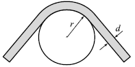
- 1.2×105 kgf/cm
- 1.4×105 kgf/cm
- 2.0×105 kgf/cm
- 2.2×105 kgf/cm
(정답률: 53%)
17. 단면이 10cm × 20cm인 장주가 있다. 그 길이가 3m일 때 이 기둥의 좌굴하중은? (단, 기둥의 E=2×105 kgf/cm2, 지지상태는 양단 힌지이다.)
- 36.6 tf
- 53.2 tf
- 73.1 tf
- 109.8 tf
(정답률: 63%)
18. 그림과 같이 이축응력(二軸應力)을 받고 있는 요소의 체적변형률은? (단, 탄성계수 E=2×106 kgf/cm2, 푸아송비 ν=0.3)
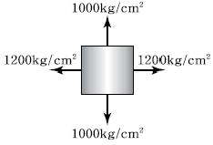
- 3.6×10-4
- 4.0×10-4
- 4.4×10-4
- 4.8×10-4
(정답률: 74%)
19. 다음 중 정(+)의 값 뿐만 아니라 부(-)의 값도 갖는 것 은?
- 단면계수
- 단면2차모멘트
- 단면2차반경
- 단면상승모멘트
(정답률: 79%)
20. 그림과 같은 정정 라멘에서 C점의 수직처짐은?
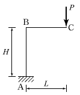
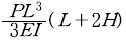
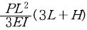
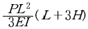
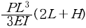
(정답률: 58%)
2과목: 측량학
21. 항공 LiDAR 자료의 특성에 대한 설명으로 옳은 것은?
- 시간, 계절 및 기상에 관계없이 언제든지 관측이 가능하다.
- 적외선 파장은 물에 잘 흡수되므로 수면에 반사된 자료는 신뢰성이 매우 높다.
- 사진 촬영을 동시에 진행할 수 없으므로 자료 판독이 어렵다.
- 산림지역에서 지표면의 관측이 가능하다.
(정답률: 58%)
22. 지형도 작성을 위한 방법과 거리가 먼 것은?
- 탄성파 측량을 이용하는 방법
- 토탈스테이션 측량을 이용하는 방법
- 항공사진 측량을 이용하는 방법
- 인공위성 영상을 이용하는 방법
(정답률: 67%)
23. 원곡선의 주요점에 대한 좌표가 다음과 같을 때 이 원곡선의 교각(I)는? (단, 교점(I. P)의 좌표 : X=1150.0m, Y=2300.0m, 곡선시점(B.C)의 좌표 : X=1000.0m, Y=2100.0m, 곡선종점(E.C)의 좌표 : X=1000.0m, Y=2500.0m)
- 90° 00′00″
- 73° 44′ 24″
- 53° 07′48″
- 36″ 52′ 12″
(정답률: 43%)
24. 30m에 대하여 3mm 늘어나 있는 줄자로써 정사각형의 지역을 측정한 결과 80000m2이었다면 실제의 면적은?
- 80016m2
- 80008m2
- 79984m2
- 79992m2
(정답률: 65%)
25. 수준측량에서 수준 노선의 거리와 무게(경중률)의 관계로 옳은 것은?
- 노선거리에 비례한다.
- 노선거리에 반비례한다.
- 노선거리의 제곱근에 비례한다.
- 노선거리의 제곱근에 반비례한다.
(정답률: 65%)
26. 수평각관측법 중 가장 정확한 값을 얻을 수 있는 방법으로 삼각측량에 이용되는 방법은?
- 조합각관측법
- 방향각법
- 배각법
- 단각법
(정답률: 71%)
27. 수준측량에서 전시와 후시의 시준거리를 같게 하면 소거가 가능한 오차가 아닌 것은?
- 관측자의 시차에 의한 오차
- 정준이 불안정하여 생기는 오차
- 기포관 축과 시준축이 평행 되지 않았을 때 생기는 오차
- 지구의 곡률에 의하여 생기는 오차
(정답률: 60%)
28. 트래버스 측점 A의 좌표가 (200, 200)이고, AB 측선의 길이가 50m일 때 B점의 좌표는? (단, AB의 방위각은 195°이고, 좌표의 단위는 m이다.)
- (248.3, 187.1)
- (248.3, 212.9)
- (151.7, 187.1)
- (151.7, 212.9)
(정답률: 68%)
29. 하천측량에서 수애선의 기준이 되는 수위는?
- 갈수위
- 평수위
- 저수위
- 고수위
(정답률: 76%)
30. 평탄한 지역에서 A측점에 기계를 세우고 15km 떨어져 있는 B측점을 관측하려고 할 때에 B측점에 표척의 최소 높이는? (단, 지구의 곡률반지름=6370km, 빛의 굴절은 무시)
- 7.85m
- 10.85m
- 15.66m
- 17.66m
(정답률: 60%)
31. GPS 위성측량에 대한 설명으로 옳은 것은?
- GPS를 이용하여 취득한 높이는 지반고이다.
- GPS에서 사용하고 있는 기준타원체는 GRS80 타원체이다.
- 대기 내 수증기는 GPS 위성 신호를 지연시킨다.
- VRS 측량에서는 망조정이 필요하다.
(정답률: 63%)
32. 촬영고도 3000m에서 초점거리 15cm인 카메라로 촬영했을 때 유효모델 면적은? (단, 사진크기는 23cm×23cm, 종중복 60%, 횡중복 30%)
- 4.72km2
- 5.25km2
- 5.92km2
- 6.37km2
(정답률: 53%)
33. 클로소이드 곡선에 대한 설명으로 틀린 것은?
- 곡률이 곡선의 길이에 반비례하는 곡선이다.
- 단위클로소이드란 매개변수 A가 1인 클로소이드이다.
- 모든 클로소이드는 닮음 꼴이다.
- 클로소이드에서 매개변수가 A가 정해지면 클로소이드의 크기가 정해진다.
(정답률: 60%)
34. 지성선에 관한 설명으로 옳지 않은 것은?
- 지성선은 지표면이 다수의 평면으로 구성되었다고할 때 평면간 접합부, 즉 접선을 말하며 지세선이라고도 한다.
- 철(凸)선을 능선 또는 분수선이라 한다.
- 경사변환선이란 동일 방향의 경사면에서 경사의 크기가 다른 두면의 접합선이다.
- 요(凹)선은 지표의 경사가 최대로 되는 방향을 표시한 선으로 유하선이라고 한다.
(정답률: 72%)
35. 장애물로 인하여 접근하기 어려운 2점 P, Q점을 간접거리 측량한 결과 그림과 같다. AB 의 거리가 216.90m일 때 PQ의 거리는?
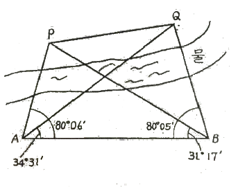
- 120.96m
- 142.29m
- 173.39m
- 194.22m
(정답률: 52%)
36. 100m2인 정사각형 토지의 면적을 0.1m2까지 정확하게 구하고자 한다면 이에 필요한 거리관측의 정확도는?
- 1/2000
- 1/1000
- 1/500
- 1/300
(정답률: 59%)
37. 사진상의 연직점에 대한 설명으로 옳은 것은?
- 대물렌즈의 중심을 말한다.
- 렌즈의 중심으로부터 사진면에 내린 수선의 발이다.
- 렌즈의 중심으로부터 지면에 내린 수선의 연장선과 사진면과의 교점이다.
- 사진면에 직교되는 광선과 연직선이 만나는 점이다.
(정답률: 58%)
38. 교점(I.P)까지의 누가거리가 355m인 곡선부에 반지름(R)이 100m인 원곡선을 편각법에 의해 삽입하고자 한다. 이때 20m에 대한 호와 현길이의 차이에서 발생하는 편각(δ)의 차이는?
- 약 20″
- 약 34″
- 약 46″
- 약 55″
(정답률: 45%)
39. 트래버스 ABCD에서 각 측선에 대한 위거와 경거 값이 아래 표와 같을 때, 측선 BC의 배횡거는?
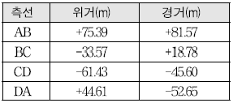
- 81.57m
- 155.10m
- 163.14m
- 181.92m
(정답률: 69%)
40. 전자파거리측량기로 거리를 측량할 때 발생되는 관측 오차에 대한 설명으로 옳은 것은?
- 모든 관측 오차는 거리에 비례한다.
- 모든 관측 오차는 거리에 비례하지 않는다.
- 거리에 비례하는 오차와 비례하지 않는 오차가 있다.
- 거리가 어떤 길이 이상으로 커지면 관측 오차가 상쇄되어 길이에 대한 영향이 없어진다.
(정답률: 65%)
3과목: 수리학 및 수문학
41. Darcy-Weisbach의 마찰손실수두공식
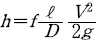
에 있어서 f 는 마찰손실계수이다. 원형관의 관벽이 완전조면인 거친관이고, 흐름이 난류라고 하면 f 는?- 후르드 수만의 함수로 표현할 수 있다.
- 상대조도만의 함수로 표현할 수 있다.
- 레이놀즈 수만의 표현할 수 있다.
- 레이놀즈 수와 조도의 함수로 표현할 수 있다.
(정답률: 49%)
42. 절대압력 Pab, 계기압력(또는 상대압력) Pg 그리고 대기압 Pat 라고 할 때 이들의 관계식으로 옳은 것은?
- Pab-Pg=Pat
- Pab+Pg=Pat
- Pg-Pat=Pab
- Pg+Pat=Pab-1
(정답률: 48%)
43. 어떤 유역에 70mm의 강우량이 그림과 같은 분포로 내렸을 때 유역의 직접유출량이 30mm이었다면 이때의 φ-index는?
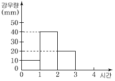
- 10mm/h
- 12.5mm/h
- 15mm/h
- 20mm/h
(정답률: 62%)
44. 부등류에 대한 표현으로 가장 적합한 것은? (단, t : 시간, ℓ : 거리, v : 유속)
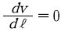
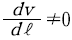
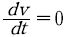
(정답률: 60%)
45. 자연하천에서 수위-유량관계곡선이 loop형을 이루게 되는 이유가 아닌 것은?
- 배수 및 저수효과
- 하도의 인공적 변화
- 홍수 시 수위의 급변화
- 조류 발생
(정답률: 54%)
46. 그림과 같은 부등류 흐름에서 y는 실제수심, yc는 한계수심, yn은 등류수심을 표시한다. 그림의 수로경사에 관한 설명과 수면형 명칭으로 옳은 것은?
- 완경사 수로에서의 배수곡선이며 M1곡선
- 급경사 수로에서의 배수곡선이며 S1곡선
- 완경사 수로에서의 배수곡선이며 M2곡선
- 급경사 수로에서의 저하곡선이며 S2곡선
(정답률: 62%)
47. 직사각형 단면 개수로에서 수심이 1m, 평균유속이 4.5m/s, 에너지보정계수 α=1.0일 때 비에너지( He)는?
- 1.03m
- 2.03m
- 3.03m
- 4.03m
(정답률: 61%)
48. 수표면적이 10km2인 저수지에 24시간 동안 측정된 증발량이 2mm이며, 이 기간 동안 저수지 수위의 변화가 없었다면, 저수지로 유입된 유량은? (단, 저수지의 수표면적은 수심에 따라 변화하지 않음)
- 0.23m3/s
- 2.32m3/s
- 0.46m3/s
- 4.63m3/s
(정답률: 46%)
49. 그림과 같이 일정한 수위가 유지되는 충분히 넓은 두 수조의 수중 오리피스에서 오리피스의 직경 d=20cm일 때, 유출량 Q는? (단, 유량계수 C=1 이다.)
- 0.314m3/s
- 0.628m3/s
- 3.14m3/s
- 6.28m3/s
(정답률: 57%)
50. 수위차가 3m인 2개의 저수지를 지름 50cm, 길이 80m의 직선관으로 연결하였을 때 유량은? (단, 입구손실계수=0.5, 관의 마찰손실계수=0.0265, 출구손실계수=1.0, 이외의 손실은 없다고 한다.)
- 0.124m3/s
- 0.314m3/s
- 0.628m3/s
- 1.280m3/s
(정답률: 56%)
51. 단위유량도(Unit hydrograph)에서 강우자료를 유효우량으로 쓰게 되는 이유는?
- 기저유출이 포함되어 있기 때문에
- 손실우량을 산정할 수 없기 때문에
- 직접유출의 근원이 되는 우량이기 때문에
- 대상유역 내 균일하게 분포하는 것으로 볼 수 있기 때문에
(정답률: 62%)
52. 원형 관수로 흐름에서 Manning식의 조도계수와 마찰계수와의 관계식은? (단, f 는 마찰계수, n 은 조도계수, d 는 관의 직경, 중력가속도는 9.8m/s2이다.)
(정답률: 64%)
53. 이중누가해석(double mass analysis)에 관한 설명으로 옳은 것은?
- 유역의 평균강우량 결정에 사용된다.
- 자료의 일관성을 조사하는데 사용된다.
- 구역별 적합한 강우강도식의 산정에 사용된다.
- 일부 결측된 강우기록을 보충하기 위하여 사용된다.
(정답률: 72%)
54. 직각삼각형 위어에 있어서 월류수심이 0.25m일 때 일반식에 의한 유량은? (단, 유량계수(C)는 0.6이고, 접근속도는 무시한다.)
- 0.0143m3/s
- 0.0243m3/s
- 0.0343m3/s
- 0.0443m3/s
(정답률: 46%)
55. 개수로 흐름에 대한 설명으로 틀린 것은?
- 한계류 상태에서는 수심의 크기가 속도수두의 2배가 된다.
- 유량이 일정할 때 상류에서는 수심이 작아질수록 유속은 커진다.
- 비에너지는 수평기준면을 기준으로 한 단위무게의 유수가 가진 에너지를 말한다.
- 흐름이 사류에서 상류로 바뀔 때에는 도수와 함께 큰 손실을 동반한다.
(정답률: 51%)
56. 비중이 0.9인 목재가 물에 떠 있다. 수면 위에 노출된 체적이 1.0m3이라면 목재 전체의 체적은? (단, 물의 비중은 1.0이다.)
- 1.9m3
- 2.0m3
- 9.0m3
- 10.0m3
(정답률: 56%)
57. 두께 20.0m의 피압대수층에서 0.1m3/s로 양수했을 때 평형상태에 도달하였다. 이 양수정에서 각각 50.0m, 200.0m 떨어진 관측점에서 수위가 39.20m, 40.66m이었다면 이 대수층의 투수계수(k)는?
- 0.2m/day
- 6.5m/day
- 20.7m/day
- 65.3m/day
(정답률: 47%)
58. 베르누이 정리가 성립하기 위한 조건으로 틀린 것은?
- 압축성 유체에 성립한다.
- 유체의 흐름은 정상류이다.
- 개수로 및 관수로 모두에 적용된다.
- 하나의 유선에 대하여 성립한다.
(정답률: 60%)
59. 한 유선 상에서의 속도수두를 , 압력수두를 P/w, 위치수두를 Z 라 할 때 동수경사선(E)을 표시하는 식은? (단, V 는 유속, P 는 압력, w 는 단위중량, g 는 중력가속도, Z 는 기준면으로부터의 높이이다.)
(정답률: 61%)
60. 평면상 x, y 방향의 속도성분이 각각 u≡-ky, v=kx 인 유선의 형태는?(오류 신고가 접수된 문제입니다. 반드시 정답과 해설을 확인하시기 바랍니다.)
- 원
- 타원
- 쌍곡선
- 포물선
(정답률: 46%)
4과목: 철근콘크리트 및 강구조
61. 폭(bw) 400mm, 유효깊이(d) 600mm인 보에서 압축연단으로부터 중립축까지의 거리가 250mm이고 fck=38MPa, fy=300MPa일 때 등가응력 사각형의 깊이는?
- 195mm
- 207mm
- 212.5mm
- 224.6mm
(정답률: 57%)
62. 그림과 같은 나선철근 기둥에서 나선철근의 간격(pitch)으로 적당한 것은? (단, 소요나선철근비 ρs=0.018, 나선철근의 지름은 12mm이다.)
- 61mm
- 85mm
- 93mm
- 1⑤mm
(정답률: 49%)
63. 용접시의 주의 사항에 관한 설명 중 틀린 것은?
- 용접의 열을 될 수 있는 대로 균등하게 분포 시킨다.
- 용접부의 구속을 될 수 있는 대로 적게 하여 수축변형을 일으키더라도 해로운 변형이 남지 않도록 한다.
- 평행한 용접은 같은 방향으로 동시에 용접하는 것이 좋다.
- 주변에서 중심으로 향하여 대칭으로 용접해 나간다.
(정답률: 61%)
64. 그림과 같은 두께 13mm의 플레이트에 4개의 볼트구멍이 배치되어 있을 때 부재의 순단면적을 구하면? (단, 볼트구멍의 직경은 24mm이다.)
- 4⑤6mm2
- 3916mm2
- 3775mm2
- 3524mm2
(정답률: 63%)
65. 그림과 같은 2방향 확대 기초에서 하중계수가 고려된 계수하중 Pu(자중포함)가 그림과 같이 작용할 때 위험단면의 계수전단력(Vu)은 얼마인가?
- 1151.4kN
- 1209.6kN
- 1263.4kN
- 1316.9kN
(정답률: 46%)
66. fck=28MPa, fy=350MPa로 만들어지는 보에서 압축이형철근으로 D29(공칭지름 28.6mm)를 사용한다면 기본 정착길이는? (단, 보통 중량 콘크리트를 사용한 경우)
- 412mm
- 446mm
- 473mm
- 522mm
(정답률: 61%)
67. 유효프리스트레스응력을 결정하기 위하여 고려하여야 하는 프리스트레스의 손실원인이 아닌 것은?
- 정착장치의 활동
- 콘크리트의 탄성수축
- 포스트텐션의 긴쟁재와 덕트 사이의 마찰
- 긴장재의 건조수축
(정답률: 41%)
68. 유효깊이(d)가 450mm인 직사각형 단면보에 fy=400MPa인 인장철근이 1열로 배치되어 있다. 중립축(c)의 위치가 압축연단에서 180mm인 경우 강도감소계수(φ)는?
- 0.817
- 0.824
- 0.835
- 0.843
(정답률: 61%)
69. bw=300mm, d =500mm인 단철근직사각형 보가 있다. 강도설계법으로 해석할 때 최소철근량은 얼마인가? (단, fck=35MPa, fy =400MPa이다.)
- 490mm2
- 525mm2
- 555mm2
- 575mm2
(정답률: 58%)
70. 옹벽의 설계 및 해석에 대한 설명으로 틀린 것은?
- 활동에 대한 저항력은 옹벽에 작용하는 수평력의 1.5배 이상이어야 한다.
- 전도에 대한 저항휨모멘트는 횡토압에 의한 전도모멘트의 2.0배 이상이어야 한다.
- 저판의 뒷굽판은 정확한 방법이 사용되지 않는 한, 뒷굽판 상부에 재하되는 모든 하중을 지지하도록 설계하여야 한다.
- 부벽식 옹벽의 뒷부벽은 3변 지지된 2방향 슬래브로 설계하여야 한다.
(정답률: 58%)
71. 프리스트레스트 콘크리트의 경우 흙에 접하여 콘크리트를 친 후 영구히 흙에 묻혀있는 콘크리트의 최소 피복두께는?
- 40mm
- 60mm
- 80mm
- 100mm
(정답률: 60%)
72. 강도 설계법에서 그림과 같은 T형보에 압축연단에서 중립축까지의 거리(c)는 약 얼마인가? (단, As=14D-25 =7094mm2, fck =35MPa, fy =400MPa)
- 132mm
- 155mm
- 165mm
- 186mm
(정답률: 50%)
73. 프리스트레스트콘크리트의 원리를 설명할 수 있는 기본개념으로 옳지 않은 것은?
- 균등질 보의 개념
- 내력 모멘트의 개념
- 하중평형의 개념
- 변형도 개념
(정답률: 62%)
74. 횡구속골조구조물에서 세장비()가 얼마를 초과할 때 장주로 취급하는가? (단, M1 : 압축부재의 단부 계수휨모멘트 중 작은 값, M2 : 압축부재의 단부 계수휨모멘트 중 큰 값)
(정답률: 56%)
75. 경간 6m 단순 직사각형 단면(b=300mm, h=400mm)보에 계수하중 30kN/m가 작용할 때 PS강재가 단면도심에서 긴장되며 경간 중앙에서 콘크리트의 단면의 하연 응력이 0이 되려면 PS강재에 얼마의 긴장력이 작용되어야 하는가?
- 18⑤kN
- 2025kN
- 3⑤4kN
- 3557kN
(정답률: 65%)
76. 다음 중 플랫 슬래브(flat slab)에 대한 설명으로 옳은 것은?
- 보 없이 지판에 의해 하중이 기둥으로 전달되며, 2방향으로 철근이 배치된 콘크리트 슬래브
- 보나 지판이 없이 기둥으로 하중을 전달하는 2방향으로 철근이 배치된 콘크리트 슬래브
- 상부 수직하중을 하부 지반에 분산시키기 위해 저면을 확대시킨 철근콘크리트판
- 기초 위에 돌출된 압축부재로서 단면의 평균최소치수에 대한 높이의 비율이 3 이하인 부재
(정답률: 43%)
77. 계수전단력 Vu=75kN에 대하여 규정에 의한 최소 전단철근을 배근하여야 하는 직사각형 철근콘크리트보가 있다. 이 보의 폭이 300mm일 경우 유효깊이(d)의 최소값은? (단, fck =24MPa, fy=350MPa)
- 375mm
- 387mm
- 394mm
- 409mm
(정답률: 52%)
78. 그림과 같은 직사각형 단면의 프리텐션 부재의 편심 배치한 직선 PS강재를 820kN으로 긴장했을 때 탄성 변형으로 인한 프리스트레스의 감소량은? (단, I=3.125× 109mm4, n=6이고, 자중에 의한 영향은 무시한다.)
- 44.5MPa
- 46.5MPa
- 48.5MPa
- 50.5MPa
(정답률: 50%)
79. 복철근 콘크리트 단면에 인장철근비는 0.02, 압축 철근비는 0.01이 배근된 경우 순간처짐이 20mm일 때 6개월이 지난 후 총 처짐량은? (단, 작용하는 하중은 지속하중이며 지속하중의 6개월 재하기간에 따르는 계수 ξ 는 1.2이다.)
- 26mm
- 36mm
- 46mm
- 56mm
(정답률: 63%)
80. 이형 철근의 최소 정착길이를 나타낸 것으로 틀린 것은? (단, db=철근의 공칭지름)
- 표준갈고리가 있는 인장 이형철근 : 10 db , 또한 200mm
- 인장 이형철근 : 300mm
- 압축 이형철근 : 200mm
- 확대머리 인장 이형철근 : 8 db , 또한 150mm
(정답률: 64%)
5과목: 토질 및 기초
81. 사운딩에 대한 설명 중 틀린 것은?
- 로드 선단에 지중저항체를 설치하고 지반내 관입, 압입, 또는 회전하거나 인발하여 그 저항치로부터 지반의 특성을 파악하는 지반조사방법이다.
- 정적사운딩과 동적사운딩이 있다.
- 압입식 사운딩의 대표적인 방법은 Standard penetration test(SPT)이다.
- 특수사운딩 중 측압사운딩의 공내횡방향재하시험은 보링공을 기계적으로 수평으로 확장시키면서 측압과 수평변위를 측정한다.
(정답률: 61%)
82. 다음 표는 흙의 다짐에 대해 설명한 것이다. 옳게 설명한 것을 모두 고른 것은?
- (1), (2), (3), (4)
- (1), (2), (3), (5)
- (1), (4), (5)
- (2), (4), (5)
(정답률: 55%)
83. 현장에서 완전히 포화되었던 시료라 할지라도 시료 채취시 기포가 형성되어 포화도가 저하될 수 있다. 이 경우 생성된 기포를 원상태로 융해시키기 위해 작용시키는 압력을 무엇이라고 하는가?
- 구속압력(confined pressure)
- 축차응력(diviator stress)
- 배압(back pressure)
- 선행압밀압력(preconsolidation pressure)
(정답률: 58%)
84. 직경 30cm의 평판재하시험에서 작용압력이 30t/m2일 때 평판의 침하량이 30mm이었다면, 직경 3m의 실제 기초에 30t/m2의 압력이 작용할 때의 침하량은? (단, 지반은 사질토이다.)
- 30mm
- 99.2m
- 187.4mm
- 300mm
(정답률: 42%)
85. 다음 그림과 같은 p-q 다이아그램에서 Kf선이 파괴선을 나타낼 때 이 흙의 내부마찰각은?
- 32°
- 36.5°
- 38.7°
- 40.8°
(정답률: 54%)
86. 기초폭 4m의 연속기초를 지표면 아래 3m 위치의 모래지반에 설치하려고 한다. 이때 표준관입 시험결과에 의한 사질지반 평균 N 값이 10일 때 극한지지력은? (단, Meyerhof 공식 사용)
- 420t/m2
- 210t/m2
- 1⑤t/m2
- 75t/m2
(정답률: 44%)
87. 어떤 흙의 입도분석 결과 입경가적곡선의 기울기가 급경사를 이룬 빈입도일 때 예측할 수 있는 사항으로 틀린 것은?
- 균등계수는 작다.
- 간극비는 크다.
- 흙을 다지기가 힘들 것이다.
- 투수계수는 작다.
(정답률: 53%)
88. 통일분류법으로 흙을 분류할 때 사용하는 인자가 아닌 것은?
- 입도 분포
- 아터버그 한계
- 색, 냄새
- 군지수
(정답률: 65%)
89. 다음 중 투수계수를 좌우하는 요인이 아닌 것은?
- 토립자의 크기
- 공극의 형상과 배열
- 포화도
- 토립자의 비중
(정답률: 62%)
90. 유선망의 특징에 대한 설명으로 틀린 것은?
- 균질한 흙에서 유선과 등수두선은 상호 직교한다.
- 유선사이에서 수두감소량(head loss)은 동일하다.
- 유선은 다른 유선과 교차하지 않는다.
- 유선망은 경계조건을 만족하여야 한다.
(정답률: 48%)
91. 사면안정 해석방법에 대한 설명으로 틀린 것은?
- 일체법은 활동면 위에 있는 흙덩어리를 하나의 물체로 보고 해석하는 방법이다.
- 절편법은 활동면 위에 있는 흙을 몇 개의 절편으로 분할하여 해석하는 방법이다.
- 마찰원방법은 점착력과 마찰각을 동시에 갖고 있는 균질한 지반에 적용된다.
- 절편법은 흙이 균질하지 않아도 적용이 가능하지만, 흙속에 간극수압이 있을 경우 적용이 불가능하다.
(정답률: 58%)
92. 흙시료 채취에 대한 설명으로 틀린 것은?
- 교란의 효과는 소성이 낮은 흙이 소성이 높은 흙보다 크다.
- 교란된 흙은 자연상태의 흙보다 압축강도가 작다.
- 교란된 흙은 자연상태의 흙보다 전단강도가 작다.
- 흙시료 채취 직후의 비교적 교란 되지 않은 코어(core)는 부(負)의 과잉간극수압이 생긴다.
(정답률: 36%)
93. 아래 그림과 같은 지표면에 2개의 집중하중이 작용하고 있다. 3t의 집중하중 작용점 하부 2m 지점 A에서의 연직하중의 증가량은 약 얼마인가?(단, 영향계수는 소수점 이하 넷째자리까지 구하여 계산하시오.)
- 0.37t/m2
- 0.89 t/m2
- 1.42 t/m2
- 1.94 t/m2
(정답률: 38%)
94. 어떤 흙에 대한 일축압축시험 결과, 일축압축강도는 1.0kg/cm2, 파괴면과 수평면이 이루는 각은 50°였다. 이 시료의 점착력은?
- 0.36kg/cm2
- 0.42kg/cm2
- 0.5kg/cm2
- 0.54kg/cm2
(정답률: 47%)
95. 내부마찰각 30°, 점착력 1.5t/m2그리고 단위중량이 1.7t/m3인 흙에 있어서 인장균열(tension crack)이 일어나기 시작하는 길이는 약 얼마인가?
- 2.2m
- 2.7m
- 3.1m
- 3.5m
(정답률: 55%)
96. 아래 그림과 같은 폭(B) 1.2m, 길이(L) 1.5m인 사각형 얕은 기초에 폭(B) 방향에 대한 편심이 작용하는 경우 지반에 작용하는 최대압축응력은?
- 29.2t/m2
- 38.5t/m2
- 39.7t/m2
- 41.5t/m2
(정답률: 44%)
97. 그림과 같이 3m×3m 크기의 정사각형 기초가 있다. Terzaghi 지지력공식 qu=1.3cNc+γ1DfNq+0.4γ2BNγ을 이용하여 극한지지력을 산정할 때, 사용되는 흙의 단위중량 γ2 의 값은?
- 0.9t/m2
- 1.17t/m2
- 1.43t/m2
- 1.7t/m2
(정답률: 46%)
98. 어떤 흙의 변수위 투수시험을 한 결과 시료의 직경과 길이가 각각 5.0cm, 2.0cm이었으며, 유리관의 내경이 4.5mm, 1분 10초 동안에 수두가 40cm에서 20cm로 내렸다. 이 시료의 투수계수는?
- 4.95×10-4cm/s
- 5.45×10-4cm/s
- 1.60×10-4cm/s
- 7.39×10-4cm/s
(정답률: 39%)
99. 지표면에 4t/m2의 성토를 시행하였다. 압밀이 70% 진행되었다고 할 때 현재의 과잉간극수압은?
- 0.8t/m2
- 1.2t/m2
- 2.2t/m2
- 2.8t/m2
(정답률: 51%)
100. Sand drain 공법에서 Sand pile을 정삼각형으로 배치할 때 모래 기둥의 간격은?(단, Pile의 유효지름은 40cm이다.)
- 35cm
- 38cm
- 42cm
- 45cm
(정답률: 44%)
6과목: 상하수도공학
101. 펌프의 흡입관에 대한 설명으로 틀린 것은?
- 흡입관이 길 때에는 중간에 진동방지대를 설치할 수도 있다.
- 흡입관은 가능하면 수평으로 설치되도록 한다.
- 흡입관에는 공기가 흡입되지 않도록 한다.
- 흡입관은 펌프 1대당 하나로 한다.
(정답률: 60%)
102. 동일한 조건에서 비중 2.5인 입자의 침전속도는 비중 2.0인 입자의 몇 배인가? (단, stokes 법칙 기준)
- 1.25배
- 1.5배
- 1.6배
- 2.5배
(정답률: 45%)
103. 도 ㆍ 송수관로내의 토사류 퇴적방지와 관내면의 마멸방지를 위한 평균유속의 허용한도로 옳은 것은?
- 최소한도 0.3m/s, 최대한도 3.0m/s
- 최소한도 0.1m/s, 최대한도 2.0m/s
- 최소한도 0.2m/s, 최대한도 1.5m/s
- 최소한도 0.5m/s, 최대한도 1.0m/s
(정답률: 70%)
104. 1일 22,000m3을 정수처리 하는 정수장에서 고형 황산알루미늄을 평균 25mg/L씩 주입할 때 필요한 응집제의 양은?
- 250kg/day
- 320kg/day
- 480kg/day
- 550kg/day
(정답률: 52%)
1⑤. 수원에 관한 설명으로 옳지 않은 것은?
- 복류수는 어느 정도 여과된 것이므로 지표수에 비해 수질이 양호하며 정수공정에서 침전지를 생략하는 경우도 있다.
- 용천수는 지하수가 자연적으로 지표로 솟아나온 것으로 그 성질은 대체로 지표수와 비슷하다.
- 천층수는 지표면에서 깊지 않은 곳에 위치하므로 공기의 투과가 양호하므로 산화작용이 활발하게 진행된다.
- 심층수는 대지의 정화작용으로 무균 또는 거의 이에 가까운 것이 보통이다.
(정답률: 64%)
106. 배수관의 갱생공법으로 기존 관내의 세척(cleaning)을 수행하는 일반적인 공법과 거리가 먼 것은?
- 제트(jet) 공법
- 로터리(rotary) 공법
- 스크레이퍼(scraper) 공법
- 실드(shield) 공법
(정답률: 63%)
107. 계획오수량에 대한 설명으로 옳지 않은 것은?
- 계획오수량의 산정에서는 일반적으로 지하수의 유입량은 무시할 수 있다.
- 계획1일 평균오수량은 계획1일 최대오수량의 70 ~80%를 표준으로 한다.
- 오수관거의 설계에는 계획시간 최대오수량을 기준으로 한다.
- 계획시간 최대오수량은 계획1일 최대오수량의 1시간당 수량의 1.3~1.8배를 표준으로 한다.
(정답률: 58%)
108. 집수매거(infiltration galleries)에 관한 설명 중 옳지 않은 것은?
- 집수매거는 복류수의 흐름 방향에 대하여 지형 등을 고려하여 가능한 직각으로 설치하는 것이 효율적이다.
- 집수매거의 매설깊이는 5m 이상으로 하는 것이 바람직하다.
- 집수매거 내의 평균유속은 유출단에서 1m/s 이하가되도록 한다.
- 집수매거의 집수개구부(공) 직경은 3~5cm를 표준으로 하고, 그 수의 관거표면적 1m2 당 10~20개로 한다.
(정답률: 48%)
109. 원형 하수관에서 유량이 최대가 되는 때는?
- 수심이 72~78% 차서 흐를 때
- 수심이 80~85% 차서 흐를 때
- 수심이 92~94% 차서 흐를 때
- 가득차서 흐를 때
(정답률: 66%)
110. 활성슬러지법의 관리요인으로 옳지 않은 것은?
- 활성슬러지 슬러지용량지표(SVI)는 활성슬러지의 침강성을 나타내는 자료로 활용된다.
- 활성슬러지 부유물질 농도 측정법으로 MLSS는 활성슬러지 안의 강열감량을 의미한다.
- 수리학적 체류시간(HRT)은 유입오수의 반응탱크에 유입부터 유출까지의 시간을 의미한다.
- 고형물 체류시간(SRT)은 처리 시스템에 체류하는 활성슬러지의 평균체류시간을 의미한다.
(정답률: 49%)
111. 우수가 하수관거로 유입하는 시간이 4분, 하수관거에서의 유하시간이 15분, 이 유역의 유역면적이 4km2, 유출계수는 0.6, 강우강도식 I= 6500/(t+40) mm/h 일 때 첨두유량은? (단, t의 단위 : [분])
- 73.4m3/s
- 78.8m3/s
- 85.0m3/s
- 98.5m3/s
(정답률: 55%)
112. 수격현상(Water Hammer)의 방지 대책으로 틀린 것은?
- 펌프의 급정지를 피한다.
- 가능한 한 관내유속을 크게 한다.
- 토출관쪽에 압력조정용수조(surge tank)를 설치한다.
- 토출측 관로에 에어챔버(air chamber)를 설치한다.
(정답률: 67%)
113. 1일 오수량 60,000m3의 하수처리장에 침전지를 설계하고자 할 때 침전시간을 2시간으로 하고 유효수심을 2.5m로 하면 침전지의 필요면적은?
- 4800m2
- 3000m2
- 2400m2
- 2000m2
(정답률: 50%)
114. 취수시설의 침사지 설계에 관한 설명 중 틀린 것은?
- 침사지 내에서의 평균유속은 10~15cm/min를 표준으로 한다.
- 침사지의 체류시간은 계획취수량의 10~20분을 표준으로 한다.
- 침사지의 형상은 장방형으로 하고 길이는 폭의 3~8배를 표준으로 한다.
- 침사지의 유효수심은 3~4m를 표준으로 하고, 퇴사심도는 0.5~1m로 한다.
(정답률: 48%)
115. 하수관으로 폐수를 운반할 때 하수관의 직경이 0.5m에서 0.3m로 변환되었을 경우, 직경이 0.5m인 하수관 내의 유속이 2m/s이었다면 직경이 0.3m인 하수관내의 유속은?
- 0.72m/s
- 1.20m/s
- 3.33m/s
- 5.56m/s
(정답률: 52%)
116. 송수시설에 대한 설명으로 옳은 것은?
- 정수 처리된 물을 소요 수량만큼 수요자에게 보내는 시설
- 수원에서 취수한 물을 정수장까지 운반하는 시설
- 정수장에서 배수지까지 물을 보내는 시설
- 급수관, 계량기 등이 붙어 있는 시설
(정답률: 63%)
117. BOD 200mg/L, 유량 600m3/day인 어느 식료품 공장폐수가 BOD 10mg/L, 유량 2m3/s인 하천에 유입한다. 폐수가 유입되는 지점으로부터 하류 15km 지점의 BOD(mg/L)는? (단, 다른 유입원은 없고, 하천의 유속 0.⑤m/s, 20℃ 탈산소계수(K1)=0.1/day이고, 상용대수, 20℃기준이며 기타 조건은 고려하지 않음)
- 4.79mg/L
- 7.21mg/L
- 8.16mg/L
- 4.39mg/L
(정답률: 29%)
118. 고도처리 및 3차 처리시설의 계획하수량 표준에 관한 아래 표에서 빈칸에 알맞은 것으로 짝지어진 것은?
- (가)-계획시간최대오수량, (나)-계획1일최대오수량
- (가)-계획시간최대오수량, (나)-우천시 계획오수량
- (가)-계획1일최대오수량, (나)-계획시간최대오수량
- (가)-계획1일최대오수량, (나)-우천시 계획오수량
(정답률: 49%)
119. 정수방법 선정 시의 고려사항(선정조건)으로 가장 거리가 먼 것은?
- 원수의 수질
- 도시발전 상황과 물 사용량
- 정수수질의 관리목표
- 정수시설의 규모
(정답률: 59%)
120. 하수배제 방식에 관한 설명 중 틀린 것은?
- 합류식과 분류식은 각각의 장단점이 있으므로 도시의 실정을 충분히 고려하여 선정할 필요가 있다.
- 합류식은 우천시 계획 하수량 이상이 되면 오수가 우수에 섞여서 공공수역에 유출될 수 있기 때문에 수질 보존 대책이 필요하다.
- 분류식은 우천시 우수가 전부 공공수역에 방류되기 때문에 우천시 오탁의 문제가 없다.
- 분류식의 처리장에서는 시간에 따라 오수 유입량의 변동이 크므로 조정지 등을 통하여 유입량을 조정하면 유지관리가 쉽다.
(정답률: 55%)